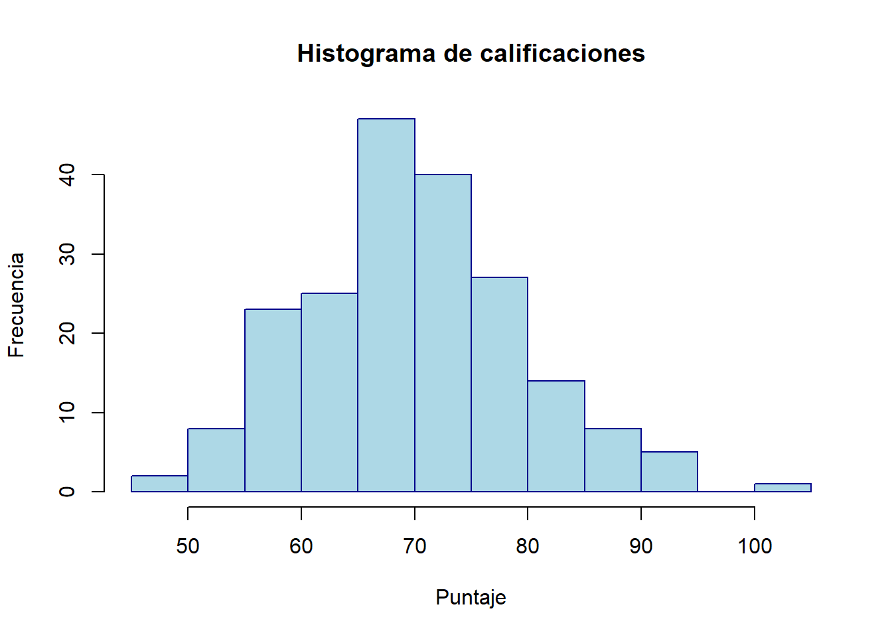
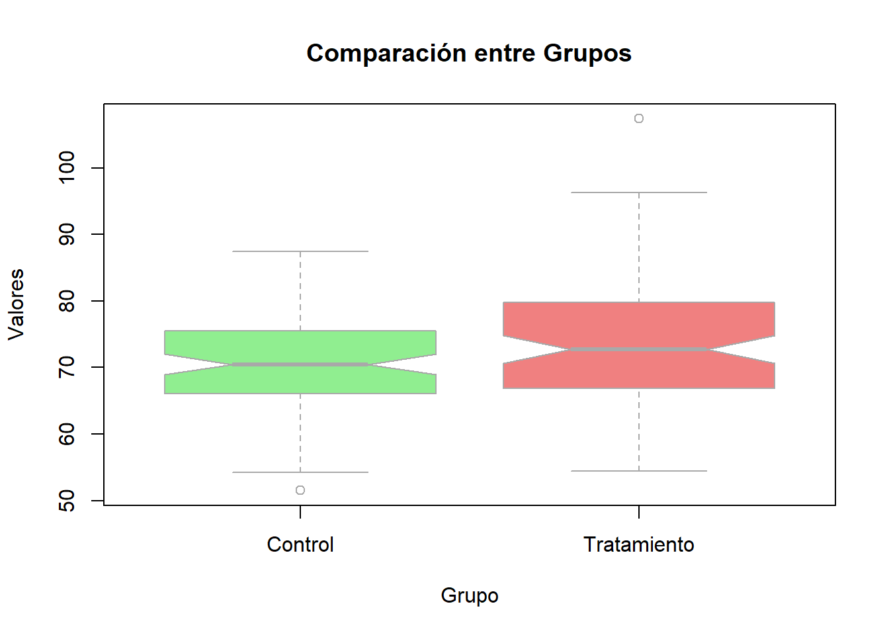
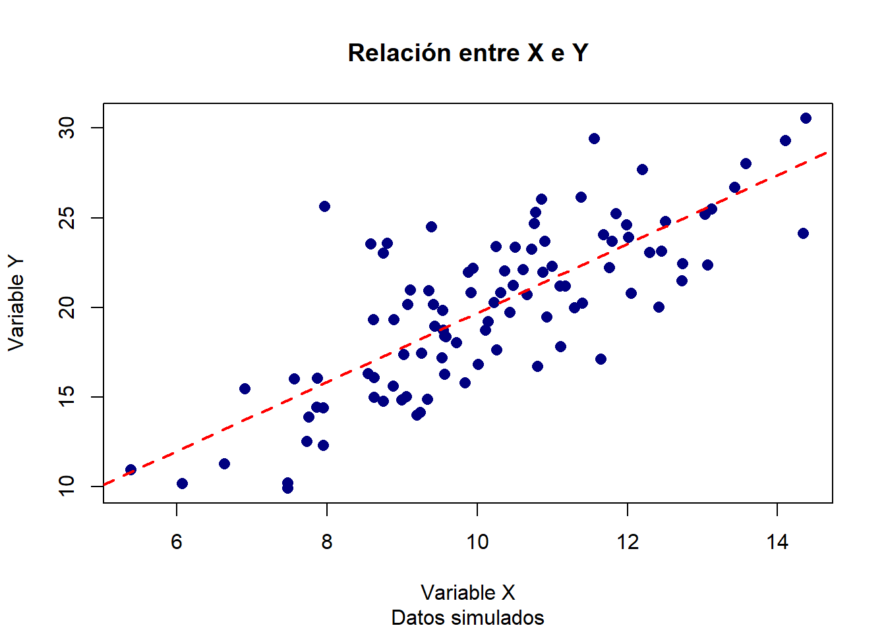
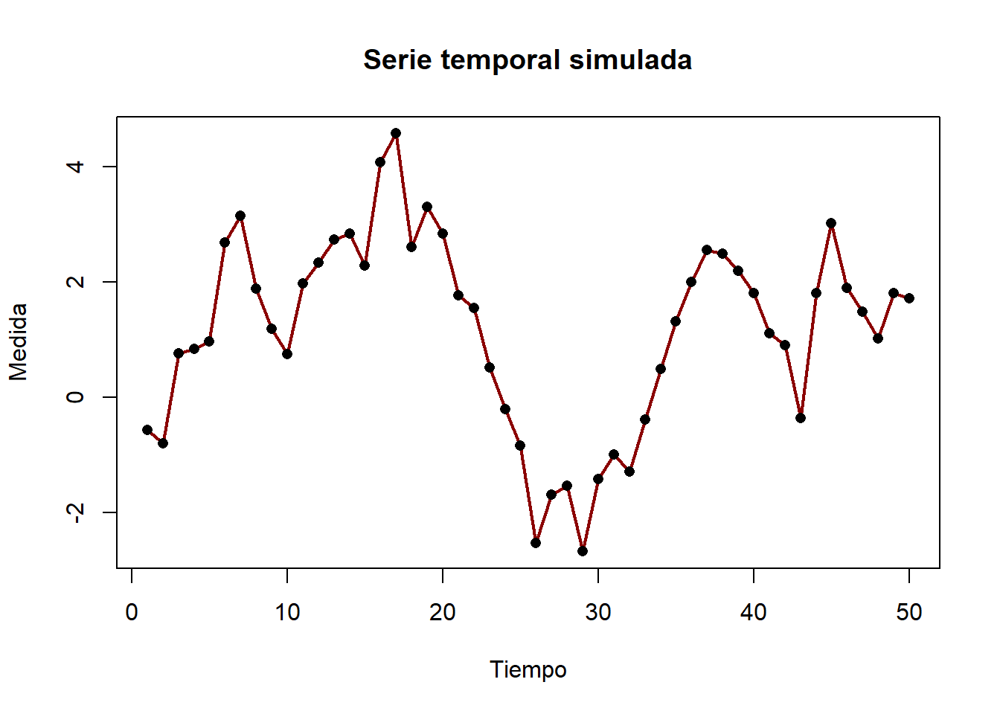
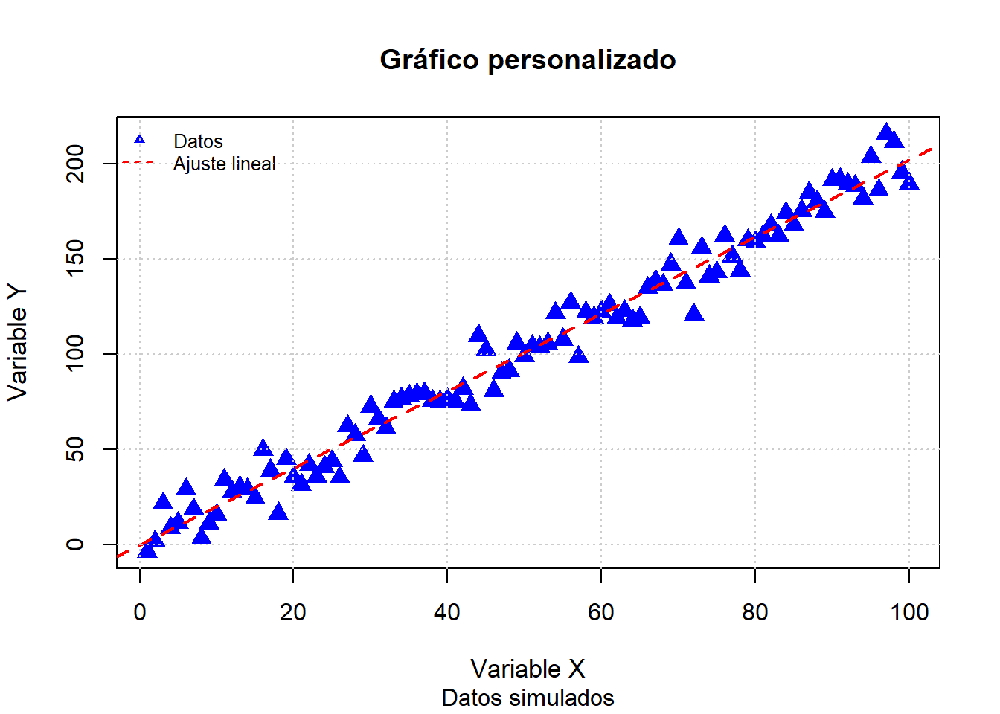

hist(x,
breaks = "Sturges",
freq = TRUE,
col = NULL,
border = NULL,
main = NULL,
xlab = NULL,
ylab = NULL,
...)13 Visualizaciones Base de R
La comprensión de los principios básicos de la visualización efectiva constituye la base para una correcta interpretación y comunicación de los datos en el análisis estadístico. Sin embargo, para llevar estos principios a la práctica, es indispensable conocer y dominar las herramientas que permiten construir representaciones gráficas de calidad. En este sentido, el lenguaje R ofrece un conjunto robusto de funciones base que facilitan la creación de diversos tipos de gráficos, esenciales para la exploración y validación de los supuestos estadísticos en la estadística clásica. El siguiente capítulo se centra en el uso de estas funciones, proporcionando ejemplos y recomendaciones para su aplicación en el análisis de datos, y mostrando cómo los conceptos teóricos previamente expuestos se materializan en la práctica cotidiana del análisis estadístico (Venables & Ripley, 2002).
13.1 Funciones gráficas básicas de R
El sistema gráfico base de R constituye una de las herramientas más accesibles y versátiles para la visualización de datos en estadística clásica. Estas funciones permiten crear gráficos de manera rápida y flexible, facilitando tanto la exploración inicial de los datos como la comprobación de supuestos estadísticos fundamentales. El enfoque de R base se basa en la construcción secuencial de gráficos, donde cada elemento puede ser añadido o modificado mediante argumentos y funciones auxiliares, lo que resulta especialmente útil en el análisis exploratorio y diagnóstico (Murrell, 2018; Venables & Ripley, 2002).
Entre las funciones más utilizadas se encuentran:
plot(): función genérica para gráficos de dispersión, líneas y otros tipos de visualizaciones.hist(): para la creación de histogramas que muestran la distribución de variables cuantitativas.boxplot(): para diagramas de caja que resumen la dispersión y los valores atípicos.barplot(): para gráficos de barras de frecuencias o proporciones.qqnorm()yqqline(): para gráficos Q-Q que evalúan la normalidad de los datos.pairs(): para matrices de gráficos de dispersión entre varias variables.
Estas funciones son la base para la mayoría de los análisis gráficos en estadística clásica, permitiendo una rápida inspección visual de los datos y la validación de supuestos (Venables & Ripley, 2002).
13.2 Creación de gráficos exploratorios
La creación de gráficos exploratorios en R base es fundamental para el análisis inicial de los datos y la detección de patrones, tendencias y anomalías. A continuación se detallan los principales tipos de gráficos, su sintaxis y los argumentos más relevantes, acompañados de ejemplos y explicaciones pedagógicas (Venables & Ripley, 2002; Murrell, 2018).
13.2.1 Histogramas
La función principal para crear histogramas en R es hist(). Su sintaxis general es:
Explicación de los argumentos:
x: Vector numérico con los datos a graficar.breaks: Define el número de intervalos (bins) o el método para calcularlos. Puede ser un número, un vector de puntos de corte, o un método como “Sturges”, “Scott”, “FD”.freq: Si es TRUE, el eje Y muestra frecuencias absolutas; si es FALSE, muestra densidades.col: Color de las barras.border: Color del borde de las barras.main: Título principal del gráfico.xlab,ylab: Etiquetas de los ejes X e Y....: Otros argumentos gráficos adicionales.
Ejemplo detallado:
# Simulación de datos
set.seed(123)
notas <- rnorm(200, mean = 70, sd = 10)
# Histograma personalizado
hist(notas,
breaks = 15, # Número de intervalos
freq = TRUE, # Mostrar frecuencias absolutas
col = "lightblue", # Color de las barras
border = "darkblue", # Color del borde
main = "Histograma de calificaciones", # Título
xlab = "Puntaje", # Etiqueta eje X
ylab = "Frecuencia") # Etiqueta eje Y
13.2.2 Diagramas de caja (boxplots)
La función principal es boxplot(). Su sintaxis general es:
boxplot(formula,
data = NULL,
main = NULL,
xlab = NULL,
ylab = NULL,
col = NULL,
border = NULL,
notch = FALSE,
outline = TRUE,
...)formula: Expresión del tipoy ~ grupopara comparar grupos.data: Data frame donde buscar las variables.main,xlab,ylab: Títulos y etiquetas.col: Colores de las cajas.border: Color del borde de las cajas.notch: Si es TRUE, añade una muesca para comparar medianas.outline: Si es TRUE, muestra valores atípicos....: Otros argumentos gráficos.
Ejemplo detallado:
# Simulación de datos para dos grupos
set.seed(123)
grupo <- factor(rep(c("Control", "Tratamiento"), each = 100))
valores <- c(rnorm(100, 70, 8), rnorm(100, 75, 10))
# Boxplot personalizado
boxplot(valores ~ grupo,
main = "Comparación entre Grupos",
xlab = "Grupo",
ylab = "Valores",
col = c("lightgreen", "lightcoral"),
border = "darkgray",
notch = TRUE, # Mostrar muesca para comparar medianas
outline = TRUE) # Mostrar valores atípicos
13.2.3 Gráficos de dispersión
La función principal es plot(). Su sintaxis general para dos variables es:
plot(x, y,
type = "p",
main = NULL,
sub = NULL,
xlab = NULL,
ylab = NULL,
pch = 1,
col = NULL,
cex = 1,
...)Explicación de los argumentos:
x,y: Vectores numéricos de igual longitud.type: Tipo de gráfico (“p” para puntos, “l” para líneas, “b” para ambos).main,sub: Título principal y subtítulo.xlab,ylab: Etiquetas de los ejes.pch: Tipo de símbolo para los puntos (1: círculo, 16: círculo sólido, 17: triángulo, etc.).col: Color de los puntos.cex: Tamaño relativo de los puntos....: Otros argumentos gráficos.
Ejemplo detallado:
# Simulación de datos
set.seed(123)
x <- rnorm(100, mean = 10, sd = 2)
y <- 2 * x + rnorm(100, 0, 3)
# Gráfico de dispersión personalizado
plot(x, y,
type = "p", # Tipo de gráfico: puntos
main = "Relación entre X e Y",
sub = "Datos simulados",
xlab = "Variable X",
ylab = "Variable Y",
pch = 16, # Círculo sólido
col = "navy", # Color de los puntos
cex = 1.2) # Tamaño de los puntos
# Añadir línea de regresión
abline(lm(y ~ x), col = "red", lwd = 2, lty = 2)
13.2.4 Gráficos de líneas
Para series temporales o secuencias, se usa plot() con type = "l":
plot(x, y,
type = "l",
main = NULL,
xlab = NULL,
ylab = NULL,
col = NULL,
lwd = 1,
...)type = "l": Dibuja una línea.lwd: Grosor de la línea.
Ejemplo detallado:
# Simulación de serie temporal
set.seed(123)
tiempo <- 1:50
medidas <- cumsum(rnorm(50))
# Gráfico de líneas
plot(tiempo, medidas,
type = "l", # Tipo de gráfico: línea
main = "Serie temporal simulada",
xlab = "Tiempo",
ylab = "Medida",
col = "darkred",
lwd = 2) # Grosor de la línea
# Añadir puntos sobre la línea
points(tiempo, medidas, pch = 16, col = "black")
13.3 Visualización para la comprobación de supuestos estadísticos
La validación gráfica de supuestos estadísticos es fundamental para garantizar la validez de los análisis en estadística clásica. Esta sección se centra en las herramientas gráficas específicas que R base proporciona para evaluar los supuestos de normalidad, homocedasticidad y linealidad, esenciales en pruebas como ANOVA y regresión lineal (Venables & Ripley, 2002).
13.3.1 Gráficos Q-Q para evaluar normalidad
Los gráficos Q-Q (quantile-quantile) constituyen una herramienta visual poderosa para evaluar el ajuste de los datos a una distribución teórica. Cuando los puntos se alinean sobre la diagonal, se puede inferir que los datos siguen la distribución de referencia, típicamente la normal. Las desviaciones sistemáticas de esta línea sugieren alejamientos de la normalidad que pueden requerir transformaciones de datos o el uso de métodos no paramétricos (Cleveland, 1993).
La sintaxis básica para crear gráficos Q-Q en R incluye dos funciones principales: qqnorm() para crear el gráfico base y qqline() para añadir la línea de referencia. A continuación se presenta un ejemplo comentado que ilustra su implementación:
# Simulación de tres conjuntos de datos con diferentes distribuciones
set.seed(123)
datos_normales <- rnorm(100, mean = 0, sd = 1) # Distribución normal
datos_asimetricos <- rexp(100, rate = 1) # Distribución exponencial
datos_uniformes <- runif(100, min = -3, max = 3) # Distribución uniforme
# Configuración de la ventana gráfica para múltiples gráficos
par(mfrow = c(1,3))
# Gráfico Q-Q para datos normales
qqnorm(datos_normales,
main = "Datos Normales",
pch = 16, # Tipo de punto: círculo sólido
col = "navy") # Color de los puntos
qqline(datos_normales, # Línea de referencia
col = "red", # Color de la línea
lwd = 2) # Grosor de la línea
# Gráfico Q-Q para datos asimétricos
qqnorm(datos_asimetricos,
main = "Datos Asimétricos",
pch = 16,
col = "darkgreen")
qqline(datos_asimetricos,
col = "red",
lwd = 2)
# Gráfico Q-Q para datos uniformes
qqnorm(datos_uniformes,
main = "Datos Uniformes",
pch = 16,
col = "purple")
qqline(datos_uniformes,
col = "red",
lwd = 2)# Restaurar la configuración original de la ventana gráfica
par(mfrow = c(1,1))La interpretación de estos gráficos se basa en el patrón que forman los puntos en relación con la línea de referencia. Según Venables & Ripley (2002), las desviaciones más comunes incluyen: 1) Colas pesadas, cuando los extremos se alejan de la línea, 2) Asimetría, cuando se forma un patrón curvilíneo, y 3) Bimodalidad, cuando aparece un patrón en forma de S.
13.3.2 Gráficos de diagnóstico para modelos de regresión
Los gráficos de diagnóstico en regresión permiten evaluar simultáneamente varios supuestos del modelo lineal. R proporciona una serie de gráficos diagnósticos automáticos a través de la función plot() aplicada a objetos de clase lm. El siguiente ejemplo ilustra su implementación y uso:
# Simulación de datos para regresión lineal
set.seed(123)
x <- seq(1, 100) # Variable predictora
y <- 2 * x + rnorm(100, 0, 10) # Variable respuesta con error normal
datos <- data.frame(x = x, y = y) # Crear data frame
# Ajuste del modelo de regresión lineal
modelo <- lm(y ~ x, data = datos) # Ajustar modelo
# Gráficos de diagnóstico
par(mfrow = c(2,2)) # Configurar ventana 2x2
plot(modelo) # Generar gráficos diagnósticos
# Restaurar la configuración original de la ventana gráfica
par(mfrow = c(1,1))Los gráficos diagnósticos generados incluyen, según Murrell (2018): 1) Residuos vs valores ajustados, para evaluar linealidad y homocedasticidad, 2) Q-Q de residuos, para verificar normalidad, 3) Scale-Location, para examinar la homogeneidad de varianza, y 4) Residuos vs Leverage, para identificar observaciones influyentes.
13.4 Personalización de gráficos en R base
La personalización se logra modificando los argumentos de las funciones gráficas y añadiendo elementos con funciones auxiliares. A continuación se explican los argumentos más importantes y se muestra un ejemplo integral (Murrell, 2018).
13.4.1 Principales argumentos y funciones:
main,sub,xlab,ylab: Títulos y etiquetas.col,border,pch,lty,lwd: Colores, símbolos, tipo y grosor de líneas.cex,cex.axis,cex.lab,cex.main: Tamaño de símbolos y textos.legend(): Añade leyendas.text(): Añade texto en posiciones específicas.abline(): Añade líneas horizontales, verticales o de regresión.grid(): Añade cuadrícula.
13.4.2 Ejemplo integral
# Gráfico de dispersión personalizado
plot(x, y,
main = "Gráfico personalizado",
sub = "Datos simulados",
xlab = "Variable X",
ylab = "Variable Y",
col = "blue", # Color de los puntos
pch = 17, # Triángulo sólido
cex = 1.5, # Tamaño de los puntos
cex.main = 1.2, # Tamaño del título
cex.lab = 1.1) # Tamaño de etiquetas
# Añadir línea de regresión
abline(lm(y ~ x), col = "red", lwd = 2, lty = 2)
# Añadir leyenda
legend("topleft",
legend = c("Datos", "Ajuste lineal"),
pch = c(17, NA),
lty = c(NA, 2),
col = c("blue", "red"),
bty = "n",
cex = 0.8)
# Añadir cuadrícula
grid(col = "gray80", lty = "dotted")
Este ejemplo muestra cómo modificar títulos, etiquetas, colores, símbolos, tamaños, añadir líneas de tendencia, leyendas y cuadrículas para lograr una visualización clara y profesional (Murrell, 2018; Venables & Ripley, 2002).